3-3: Assessing a learning algorithm
A closer look at KNN solutions
This section of the lecture just reviews KKN solutions and how trend lines can
be generated from them by using the KNN algorithm. In the example from the
lectures below, we see that we're taking the mean value for k nodes at
some point x, y and drawing the entry at that location. The greatest drawback
of this method is that, on the edges, we receive straight lines because of the
back fill and forward fill of data:
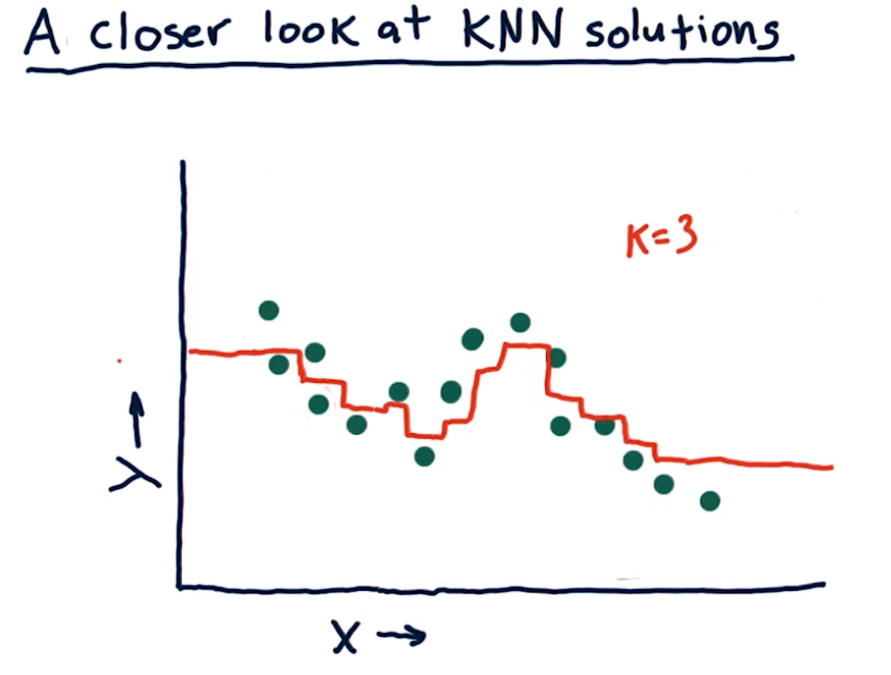
What happens as K varies?
When k approaches N number of entries, we see that the graph drawn provides
us less information - it essentially becomes a straight line for some sets of
data. In contrast, a k value of 1 provides us with a line that is basically
discrete. The final question this section in the lecture asks is:
"As we increase K we are more likely to overfit?". The answer is false,
as k increases the line drawn fits less of the data.
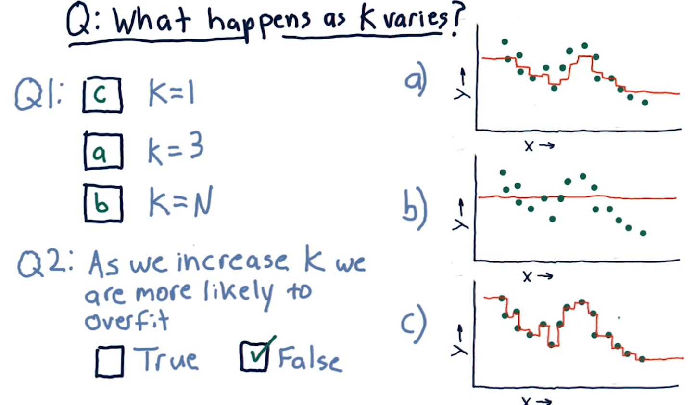
What happens as D varies?
D in this case represents a parametric model's number of parameters:
x1, x2, x3, and so on. This section of the lecture presents the same
question: "As we increase D are we more likely to overfit?". The answer is
true, as we increase the number of parameters in a parametric model, the
line in our graph becomes more complex and fits the data in our dot-graph more
closely.
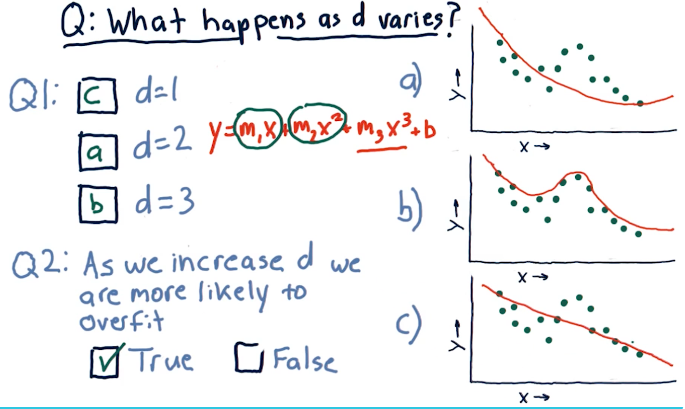
Metric 1: Root Mean Squared error
When assessing a learning algorithm, we need to be able to derive some metrics from the model's prediction. These metrics provide us with the ability to tune our algorithms, and subsequently our models. This section talks about root mean squared (RMS) error. How this metric is derived is provided by the formula in the screenshot, below:
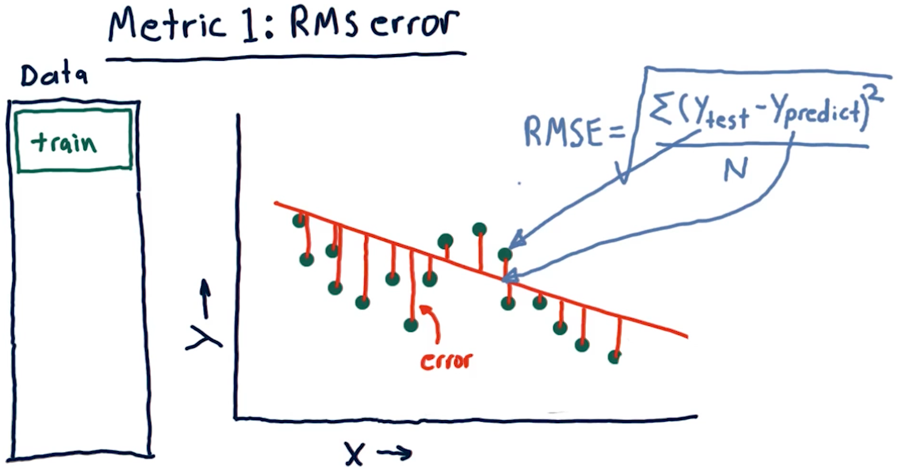
Out of sample error
Out of sample error is the RMS of our model's evaluation of the test data instead of the training data. A representation of this concept from the lecture is provided below:
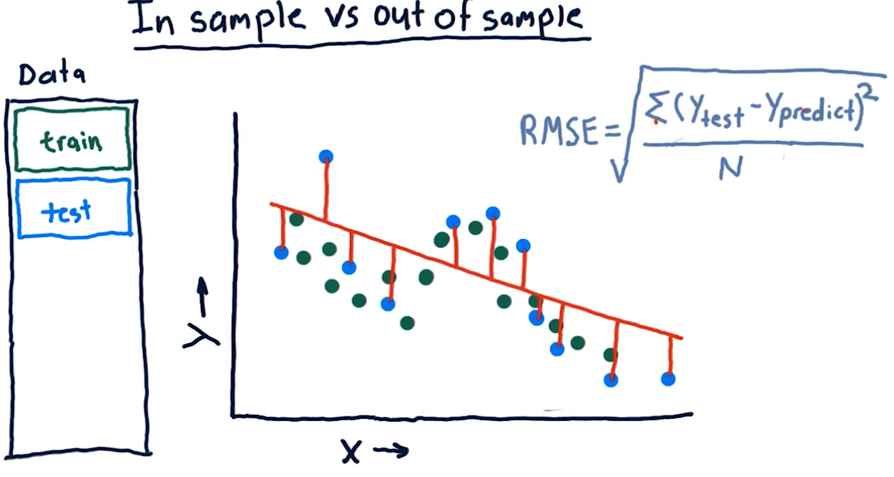
Cross validation
Researchers categorize trials for a learning algorithm as the following procedure:
- Select a set of data
- Slice the data into train data and test data
- Conduct training on the data marked for training
- Conduct testing on the data marked for testing
- Calculate the RMS error for the model's performance on both the training and the testing data
We conduct cross validation by running a series of trials on the same data, slicing the data into proportionate chunks and alternating which chunks are used for training and which chunks are used for testing. Each alternation of testing and training data is considered a trial.
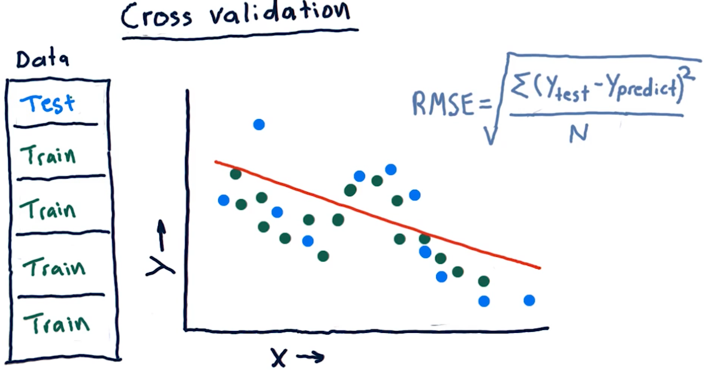
Roll forward cross validation
Cross validation is a useful technique, however, it poses some limitations for creating machine learning models for trading. Specifically, it allows the model to peek into the future, providing optimistic predictions that aren't necessarily useful for trading.
To avoid this, we ensure that train data is, chronologically, always before the test data. This is called roll forward cross validation and it helps us avoid the issue discussed in the previous paragraph.
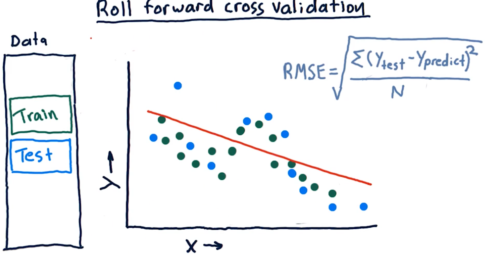
Metric 2: Correlation
Another metric, correlation, provides us with information as to how often
our predictions are correct in comparison with some test data. Given a set of
test data, x, y with x being an event and y being the result, our model
should produce another set of data x, y1 where y1 is the model's
prediction.
To measure correlation, we graph y vs y1. Our correlation is
good if our resulting graph is linear and increases as y and y1
increases. Our correlation is bad if there doesn't seem to be any
resulting linear graph.
The NumPy method np.corrcoef() provides us with a measure of
correlation for two sets of data with the following ranges:
1denotes that the data is heavily correlated-1denotes an inverse correlation0denotes no correlation- The values provided by this method can range between the values of
1and-1.
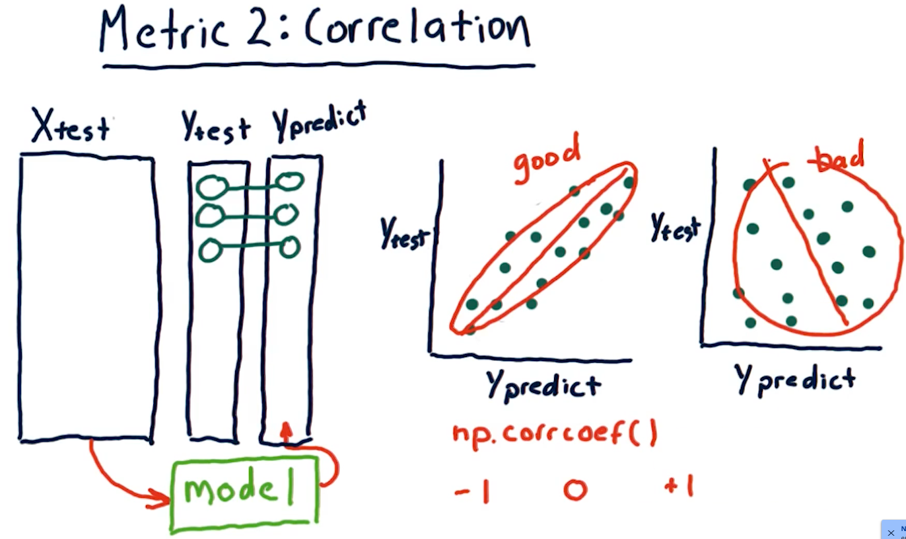
Overfitting
Overfitting is a phenomenon wherein our out of sample error begins to
increase as our degrees of freedom (the number of a parameters in our
parametric algorithm) begins to increase. Our in sample error decreases to
0 as our degrees D approaches N number of samples. As shown in the
diagram below, however, on test data, due to overfitting, our
out of sample error begins to increase as D approaches N.
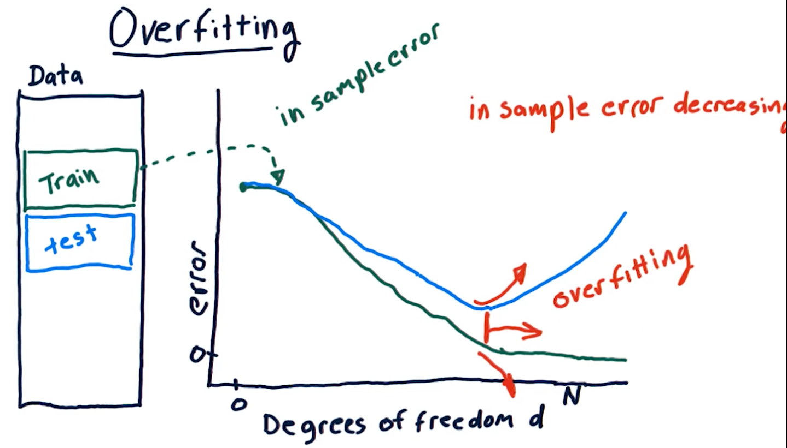
KNN overfitting
Overfitting for KNN algorithms behaves a bit differently. Because a
KNN-produced line becomes too general as K approaches N, both our
out of sample error and in sample error increase as K approaches N.
The sweet spot for K is somewhere where out of sample error decreases
a significant amount at the cost of in sample error.
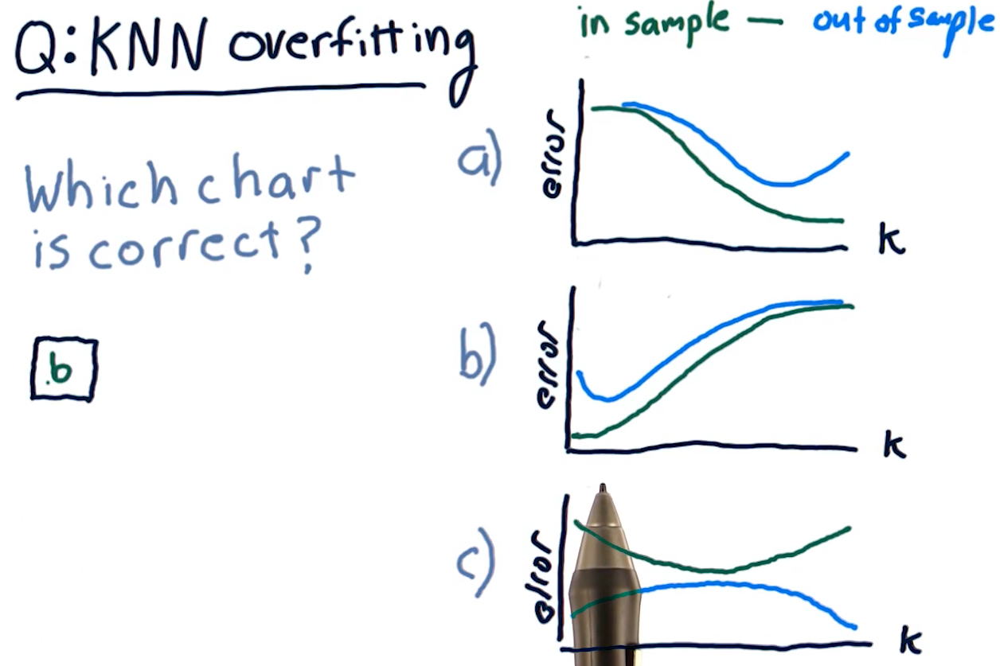
Final considerations
The following diagram outlines pros and cons of each learning algorithm with respect to compute time, query time, etc.
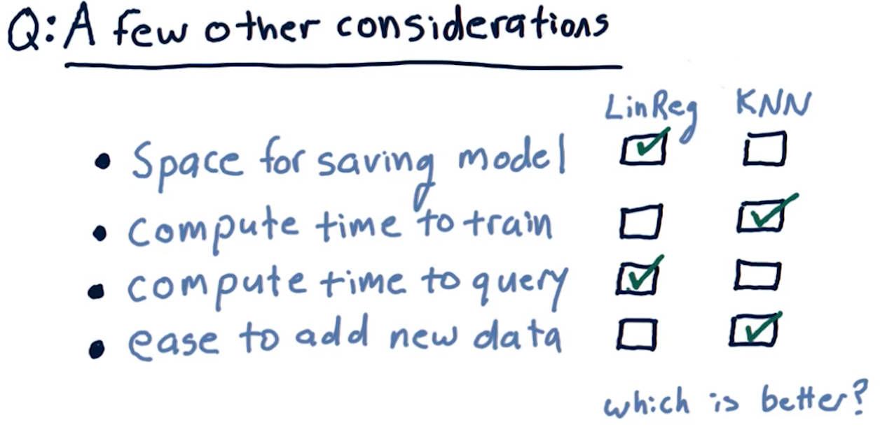